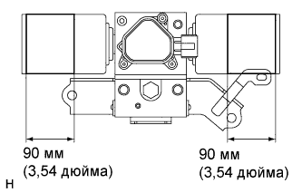

РАСПРЕДЕЛИТЕЛЬ СТАБИЛИЗАТОРА (для моделей с KDSS) > СНЯТИЕ С ЭКСПЛУАТАЦИИ |
| 1. УТИЛИЗАЦИЯ КОРПУСА БЛОКА УПРАВЛЕНИЯ СТАБИЛИЗАТОРАМИ С ГИДРОАККУМУЛЯТОРОМ В СБОРЕ |
|  |
С помощью дрели просверлите отверстия в зонах корпуса гидроаккумулятора, указанных на рисунке, чтобы выпустить находящийся внутри газ.